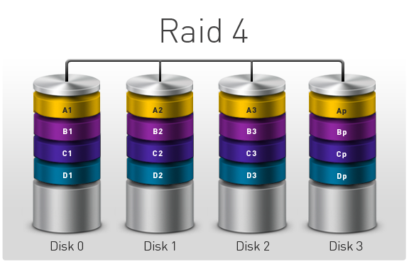
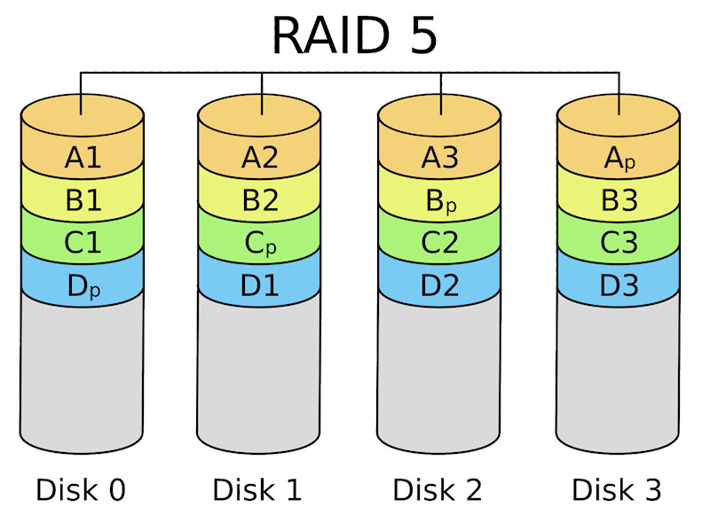
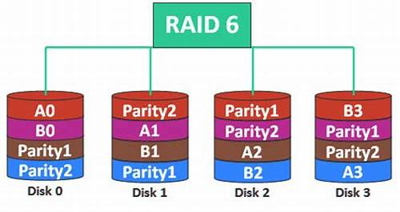
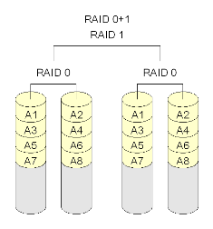
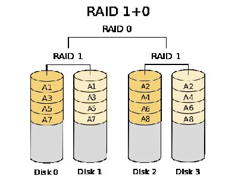

raid 0

RAID 0 łączy dwa lub więcej dysków, tworząc jeden dysk logiczny
o łącznej pojemności równiej 𝑁 N⋅ najmniejszy rozmiar dysku, gdzie 𝑁
N to liczba dysków. Dane są zapisywane na dyskach w sposób przeplotkowy,
co zapewnia szybki dostęp do danych. RAID 0 jest wykorzystywany tam,
gdzie liczy się szybkość zapisu i odczytu, ale nie ma zabezpieczenia przed awarią dysku.
raid 1

RAID 1 polega na tworzeniu lustrzanych kopii danych na dwóch
lub więcej dyskach. Zapewnia to pełną redundancję danych, ponieważ w
przypadku awarii jednego dysku dane są dostępne na pozostałych. RAID 1
zapewnia wysoką odporność
na awarie, ale pojemność macierzy jest ograniczona do rozmiaru najmniejszego dysku.
raid 2

RAID 2 stosuje technologię paskowania na poziomie bitów, wykorzystując kod
Hamminga do korekcji błędów. Jest to rozwiązanie, które nie jest już szeroko
stosowane, ale
było wykorzystywane w początkowych systemach do zapewnienia bardzo wysokiej
niezawodności.
raid 3

RAID 3 to macierz z paskowaniem na poziomie bajtów,
gdzie dane są rozdzielane między dyskami, a jeden dysk
pełni rolę dysku parzystości (zawierającego sumy kontrolne).
System ten zapewnia odporność
na awarię jednego dysku, ale może mieć problemy z wydajnością przy częstych zapisach.
raid 4

RAID 4 działa na podobnej zasadzie co RAID 3, ale w tym przypadku
dane są dzielone na bloki, a blok parzystości jest zapisywany na
dedykowanym dysku. RAID 4 poprawia wydajność przy operacjach
równoległych, ale może powodować spadek wydajności przy częstych
zapisach, ponieważ każda zmiana danych wiąże się z koniecznością
modyfikacji sum kontrolnych.
raid 5

RAID 5 to jedna z najczęściej stosowanych konfiguracji,
która łączy paskowanie danych i rozproszoną parzystość.
Dzięki temu system jest odporny na awarię jednego dysku, a dane
mogą być odbudowane z pozostałych dysków. RAID 5 oferuje lepszą szybkość odczytu
niż RAID 1, ale spadek wydajności przy zapisie z powodu obliczeń sum kontrolnych.
raid 6

RAID 6 to macierz z podwójną parzystością, co oznacza, że system
jest odporny na awarię dwóch dysków. Jest to bardziej niezawodne
rozwiązanie niż RAID 5, ale jest
też droższe w implementacji i może mieć większy spadek wydajności przy odbudowie danych.
raid 0+1

RAID 0+1 to macierz, która łączy RAID 1 (lustrzany) z RAID 0 (striping).
Oferuje szybki zapis i odczyt z zabezpieczeniem danych przez mirroring.
W przypadku awarii jednego dysku, system wciąż działa, ale gdy awarii
ulegnie cały zestaw dysków lustrzanych,
cała macierz zostaje utracona. Potrzebne są co najmniej 4 dyski.
raid 1+0

RAID 6 to macierz z podwójną parzystością, co oznacza, że system
jest odporny na awarię dwóch dysków. Jest to bardziej niezawodne
rozwiązanie niż RAID 5, ale jest
też droższe w implementacji i może mieć większy spadek wydajności przy odbudowie danych.